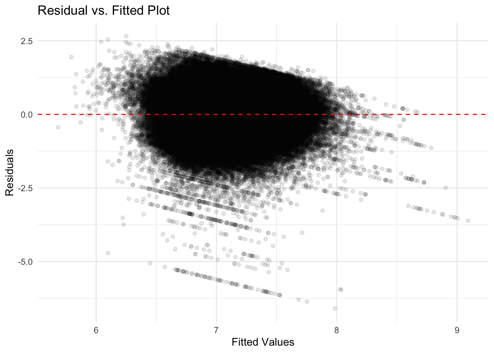
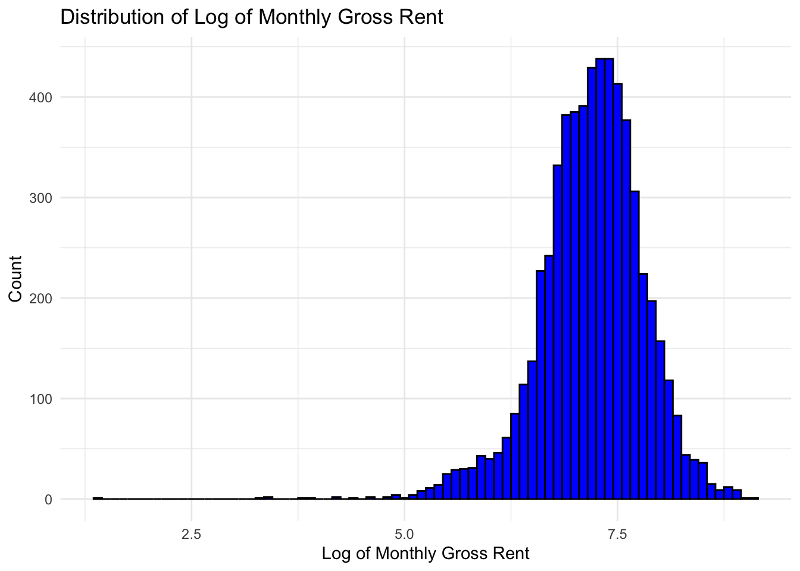
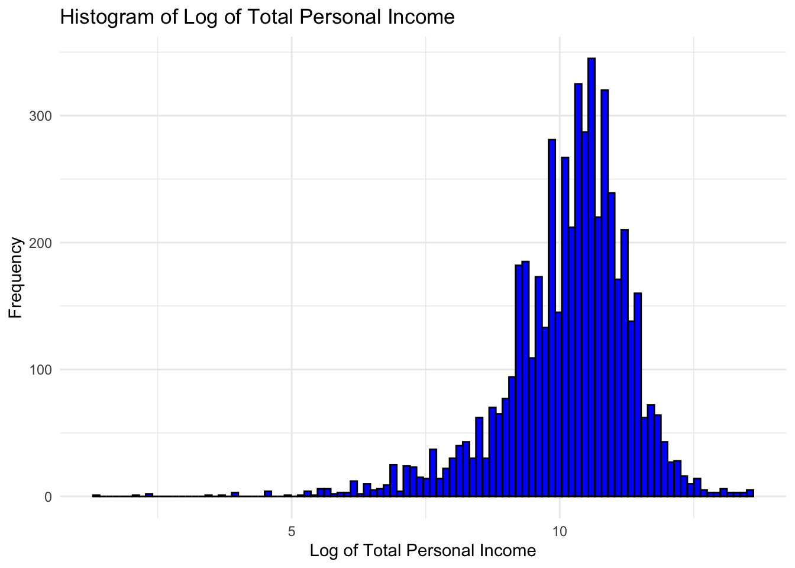
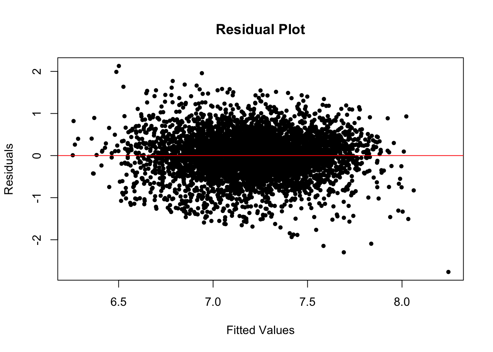

Roughly see the relationship between predictor and response variable
The horizontal axis represents the total income (INCTOT), which is the predictor.
The vertical axis represents the rent paid (RENTGRS), which is the response.
The purpose of creating this scatter plot is to assess whether there is a linear or non-linear relationship between total income and rent paid in a general way.
There seems to be a large concentration of points towards the lower end of the income scale with lower rents, which suggests that a significant portion of the dataset includes individuals with lower income and rent levels.
The plot does not clearly show a distinct linear trend, suggesting that the relationship between these variables might be non-linear
Simple linear model
The output of fitting a simple linear model will get the summary like following:
Regression Coefficients Table:
| term | estimate | std.error | statistic | p.value |
|---|---|---|---|---|
| (Intercept) | 1369.9952048 | 14.2472905 | 96.15830 | 0 |
| INCTOT | 0.0053213 | 0.0002182 | 24.39103 | 0 |
Model Fit Statistics Table:
| r.squared | adj.r.squared | sigma | statistic | p.value | df | logLik | AIC | BIC | deviance | df.residual | nobs |
|---|---|---|---|---|---|---|---|---|---|---|---|
| 0.0902228 | 0.0900712 | 896.1935 | 594.9223 | 0 | 1 | -49309.79 | 98625.57 | 98645.67 | 4818173576 | 5999 | 6001 |
Residual plot

- This diagram indicates that the spread of residuals appears to increase as the fitted values increase. This pattern indicates heteroscedasticity, which means that the variability of the residuals is not constant across levels of the predictor variable. In an ideal scenario, I’d want to see a consistent spread of residuals across all levels of fitted values, suggesting homoscedasticity.
Multiple linear regression
We strive to enhance model accuracy by incorporating additional control variables into the model, encompassing both categorical and numerical variables. These control variables help mitigate bias, isolate effects, and enhance generalization. Subsequently, we present the correlation matrix, which provides valuable insights into the relationships between numerical variables.
| INCTOT | ROOMS | NFAMS | AGE | FTOTINC | RENTGRS | |
|---|---|---|---|---|---|---|
| INCTOT | 1.0000000 | -0.0284713 | -0.0358320 | 0.0418338 | 0.6905567 | 0.3003711 |
| ROOMS | -0.0284713 | 1.0000000 | 0.1409337 | -0.0610423 | 0.1050778 | 0.1457684 |
| NFAMS | -0.0358320 | 0.1409337 | 1.0000000 | -0.1266306 | -0.1053792 | 0.0966248 |
| AGE | 0.0418338 | -0.0610423 | -0.1266306 | 1.0000000 | -0.0521530 | -0.0837413 |
| FTOTINC | 0.6905567 | 0.1050778 | -0.1053792 | -0.0521530 | 1.0000000 | 0.4292341 |
| RENTGRS | 0.3003711 | 0.1457684 | 0.0966248 | -0.0837413 | 0.4292341 | 1.0000000 |
INCTOT and FTOINC have a strong positive correlation, indicating that as individual income rises, family income tends to rise in concert suggesting a possible overlap or direct relationship between these two variables in the dataset. So we need to care about the multicollineaity problem while fitting model.
ROOMS and NFAMS display minor positive correlations to RENTGRS. This might suggest that properties with more rooms may house more families and potentially lead to higher rents.
Notably, Age has a moderate negative correlation with Number of Families, which could hint at younger populations having larger family sizes or vice versa, but this is not a strong relationship. Still, we should observe the multicollineaity problem while fitting model.
Regression Coefficients Table:
| term | estimate | std.error | statistic | p.value |
|---|---|---|---|---|
| (Intercept) | 138.1185777 | 141.2714323 | 0.9776823 | 0.3282711 |
| INCTOT | 0.0006097 | 0.0002902 | 2.1007863 | 0.0357015 |
| KITCHENYes (shared or exclusive use) | -6.1829776 | 90.8767566 | -0.0680370 | 0.9457585 |
| ROOMS | 46.4907520 | 5.3702515 | 8.6570903 | 0.0000000 |
| NFAMS | 132.1944360 | 13.6931462 | 9.6540586 | 0.0000000 |
| AGE | -2.0758142 | 0.7523351 | -2.7591615 | 0.0058126 |
| MARSTMarried, spouse absent | 49.6811716 | 68.5403491 | 0.7248456 | 0.4685751 |
| MARSTMarried, spouse present | 159.9536213 | 35.4269714 | 4.5150239 | 0.0000065 |
| MARSTNever married/single | 105.3336893 | 36.3950074 | 2.8941796 | 0.0038153 |
| MARSTSeparated | -8.8902061 | 67.6504230 | -0.1314139 | 0.8954523 |
| MARSTWidowed | 155.3446449 | 54.6823660 | 2.8408545 | 0.0045145 |
| RACEBlack/African American | 298.3828456 | 95.0013295 | 3.1408281 | 0.0016929 |
| RACEChinese | 555.5828036 | 124.8976462 | 4.4483048 | 0.0000088 |
| RACEJapanese | 600.4379460 | 196.2637964 | 3.0593413 | 0.0022281 |
| RACEOther Asian or Pacific Islander | 457.2962479 | 99.9161477 | 4.5768002 | 0.0000048 |
| RACEOther race, nec | 326.8017293 | 96.1126737 | 3.4001939 | 0.0006778 |
| RACEThree or more major races | 423.9569703 | 136.5156638 | 3.1055555 | 0.0019081 |
| RACETwo major races | 344.3391572 | 95.2001877 | 3.6170008 | 0.0003005 |
| RACEWhite | 374.0737917 | 91.7421010 | 4.0774496 | 0.0000461 |
| EMPSTATNot in labour force | -16.9682582 | 25.5211603 | -0.6648702 | 0.5061592 |
| EMPSTATUnemployed | 64.2293142 | 54.6215828 | 1.1758962 | 0.2396832 |
| FTOTINC | 0.0042445 | 0.0001887 | 22.4923166 | 0.0000000 |
| REGION_CLASSIFIEDNORTHEAST | 388.6103788 | 35.8876194 | 10.8285360 | 0.0000000 |
| REGION_CLASSIFIEDSOUTH | 252.4183530 | 31.3606818 | 8.0488796 | 0.0000000 |
| REGION_CLASSIFIEDWEST | 676.2307407 | 33.2843111 | 20.3168015 | 0.0000000 |
Model Fit Statistics Table:
| r.squared | adj.r.squared | sigma | statistic | p.value | df | logLik | AIC | BIC | deviance | df.residual | nobs |
|---|---|---|---|---|---|---|---|---|---|---|---|
| 0.2836063 | 0.2807292 | 796.7908 | 98.57423 | 0 | 24 | -48592.76 | 97237.51 | 97411.71 | 3794016209 | 5976 | 6001 |
Residual plot:

- Heterskedasticity still exits as the spread of the residuals appears to be increasing with the fitted values. According to the diagram, the residuals seem to form a pattern (rather than being randomly dispersed), it indicates that the relationship between the predictors and the response variable is not entirely linear.
Log - log Model
Taking account into the possible non-linear relationship and the right-skwed distributions of our predictor and response variable, we take log to both of them.
RENTGRS:distribution of log(RENTGRS)

INCTOT: distribution of log(INCTOT)

Log-log model
Based on the previous MLR model, 1. we have applied a logarithmic transformation to both the rent and income variables to mitigate skewness in their distributions. But the problem is the logarithmic transformation necessitates all data points to be positive. Consequently, this has led to the exclusion of certain data samples that contained negative values.
- previous models indicated the presence of numerous outliers within our dataset. To address this, we have refined our dataset to include only those records where rent and income fall within three standard deviations from their respective sample means to minimize the impact of extreme values on the model’s performance.
Regression Coefficients Table
| term | estimate | std.error | statistic | p.value |
|---|---|---|---|---|
| (Intercept) | 5.1366895 | 0.1226201 | 41.8910906 | 0.0000000 |
| log_INCTOT | 0.1334432 | 0.0076107 | 17.5337350 | 0.0000000 |
| KITCHENYes (shared or exclusive use) | -0.0066589 | 0.0604818 | -0.1100975 | 0.9123363 |
| ROOMS | 0.0418089 | 0.0036091 | 11.5843972 | 0.0000000 |
| NFAMS | 0.0328959 | 0.0101097 | 3.2538811 | 0.0011458 |
| AGE | -0.0035812 | 0.0005551 | -6.4518343 | 0.0000000 |
| MARSTMarried, spouse absent | 0.1202898 | 0.0464015 | 2.5923658 | 0.0095588 |
| MARSTMarried, spouse present | 0.2037844 | 0.0234430 | 8.6927664 | 0.0000000 |
| MARSTNever married/single | 0.1093652 | 0.0241080 | 4.5364680 | 0.0000059 |
| MARSTSeparated | 0.0317790 | 0.0447758 | 0.7097359 | 0.4779001 |
| MARSTWidowed | 0.1002446 | 0.0360708 | 2.7791094 | 0.0054706 |
| RACEBlack/African American | 0.2424495 | 0.0680585 | 3.5623687 | 0.0003709 |
| RACEChinese | 0.2866273 | 0.0892431 | 3.2117595 | 0.0013274 |
| RACEJapanese | 0.3098268 | 0.1428295 | 2.1692071 | 0.0301126 |
| RACEOther Asian or Pacific Islander | 0.3673041 | 0.0716804 | 5.1241908 | 0.0000003 |
| RACEOther race, nec | 0.2807264 | 0.0690309 | 4.0666797 | 0.0000484 |
| RACEThree or more major races | 0.3545589 | 0.0965627 | 3.6717982 | 0.0002433 |
| RACETwo major races | 0.2827201 | 0.0683850 | 4.1342400 | 0.0000362 |
| RACEWhite | 0.2663981 | 0.0659347 | 4.0403296 | 0.0000542 |
| EMPSTATNot in labour force | -0.0362414 | 0.0222232 | -1.6307879 | 0.1029963 |
| EMPSTATUnemployed | 0.0755285 | 0.0431087 | 1.7520454 | 0.0798256 |
| REGION_CLASSIFIEDNORTHEAST | 0.2785538 | 0.0244365 | 11.3990853 | 0.0000000 |
| REGION_CLASSIFIEDSOUTH | 0.1917026 | 0.0213271 | 8.9886669 | 0.0000000 |
| REGION_CLASSIFIEDWEST | 0.4656973 | 0.0227072 | 20.5088390 | 0.0000000 |
- The coefficient (elasticity) of 0.1334 means that a 10% increase in total income (INCTOT) is associated with an average 1.334% increase in rent gross (RENTGRS), given that other variables in the model are held constant.
- The idea in the above conclusion that higher income leads to increased rent payments is plausible. As people earn more, they may choose to live in better accommodations or neighborhoods, which could result in higher rent expenses. And it is reliable that they only spend part of income increase on the rent.
Model Fit Statistics Table:
| r.squared | adj.r.squared | sigma | statistic | p.value | df | logLik | AIC | BIC | deviance | df.residual | nobs |
|---|---|---|---|---|---|---|---|---|---|---|---|
| 0.2267794 | 0.2233215 | 0.5072586 | 65.58265 | 0 | 23 | -3812.607 | 7675.215 | 7838.966 | 1323.352 | 5143 | 5167 |
Residual plot

The residuals appear to be centered around zero, which is good as it suggests no bias in the predictions.
There is some evidence of heteroscedasticity as the residuals seem to fan out as the fitted values increase, which is common in non-transformed data.
There are no clear patterns in the residuals, which suggests that the model catch the nonlinear relationships.
This log-transformed model seems to perform better in terms of having residuals more consistently distributed around zero. This suggests that the log transformation helped to stabilize the variance of the residuals and improve the model’s homoscedasticity.